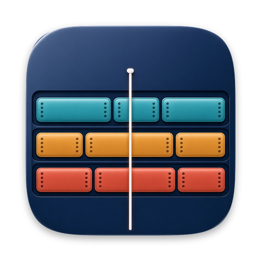

Your model
Free
Connect a model you already use. The same tools run from the app. Documents go only where you send them.

Timeline Studio Download for MacTimeline Studio is free on the Mac. Connect your own model, or have LegalAI run the AI for $79 a month.
Emails, calls & meetings · February 2026
Presentation view of a sample matter. Use the arrows, or the arrow keys.
Build it, reorder it, and stand it up in the room. That part of Timeline Studio does not ask for an account.
Timelines
Put filings, calls, and meetings on their own lines. Drag the order. The labels stay pinned to the line.
Import
Bring in a spreadsheet. One name in the timeline column names the one timeline. Two names make two. Three make three.
Categories
Text, call, email, meeting, outing, purchase, and note ship with the app. Add your own and choose an icon.
Linked files
The file stays on the Mac. In the presentation, open it and point at the page.
Presentation
Full screen. The arrow key moves to the next moment, and the other timelines move with it.
Export
PDF or PNG of what is on screen, notes open, in the layout you are showing.
Run it on a model you connect, or have LegalAI run it. The tools do not change. Who operates them does.
Dated events come off the documents, the thread, or the recording. Each one keeps the page or the timestamp it came from.
Text message
Add, move, merge, or relabel. “Shift everything from Exhibit 12 by one hour.” You see the change before it lands, and you can undo it.
Meeting
A statement on one side, the record on the other. The answer to “what happened between the call and the arrest?” cites the source.
Phone call
A chronology memo, a clean exhibit timeline, and a contradiction list. Every line points back at the page.
Solo and small-firm lawyers can use the AI without pasting a key. That is the $79 month.
Free
Connect a model you already use. The same tools run from the app. Documents go only where you send them.
$79 a month
No key to paste and no model to choose. The same tools. Documents are processed for the chronology, not used to train a model, and deleted. You get a one-page letter for the client file.
See what else is includedNo. Timeline Studio is a separate Mac app from the company. The chronology does not ask you to open the LegalAI tool.
Yes. Import, edit, present, and export stay free. Linking a file on your Mac stays free.
Yes. Connect your own model and the same tools run. The $79 month is for having LegalAI run them, plus the letter, the checked chronology, the packet, and someone to call.
The chronology lives on your Mac. A linked document stays where it is. On your own model, documents go only where you send them. On the $79 plan, a copy is processed to build the chronology and then deleted.
macOS 14 or later.
Timeline Studio is free. It runs on macOS 14 or later and keeps the chronology on that Mac.
The disk image is ad-hoc signed and is not notarized. The first time, control-click the app and choose Open. Checkout and the hosted model are not in the download.